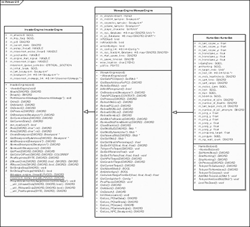
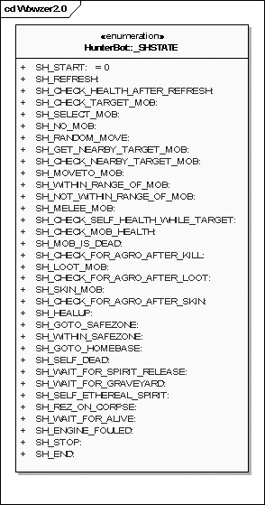
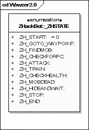

{% include JB/setup %}
{% raw %}
<div>
<a name="toppage" class="pcalibre calibre1"></a><table width="100%" border="0" cellspacing="0" cellpadding="0" class="sfbody"><tr valign="top" class="calibre2"><td class="calibre3"><a name="MainContent" class="pcalibre calibre1"></a><table width="95%" class="sfbody"><tr class="calibre2"><td class="pcalibre1 v"><!--Copyright (c) 2002 Safari Tech Books Online--><table width="100%" border="0" cellspacing="0" cellpadding="2" class="calibre4"><tr class="calibre2"><td valign="middle" class="v1 pcalibre1" height="5"></td></tr><tr class="calibre2"><td valign="middle" class="v1 pcalibre1"><table cellpadding="0" cellspacing="0" border="0" width="100%" class="calibre4"><tr class="calibre2"><td class="calibre6"><span class="calibre7"> </span>
                   
                  <span class="calibre7">   </span>
             <span class="calibre7"> </span></td></tr></table></td><td class="calibre8"/><td valign="middle" class="v2 pcalibre1"> 
           
          <span class="calibre7"><a target="_self" href="ch07lev1sec2.html" title="Previous section" class="pcalibre calibre1"></a></span>
				
				 
				
				<span class="calibre7"><a target="_self" href="ch07lev1sec4.html" title="Next section" class="pcalibre calibre1"></a></span></td></tr></table><div id="section" class="calibre15"><table width="100%" border="0" cellspacing="0" cellpadding="0" class="calibre4"><tr class="calibre2"><td valign="top" class="calibre8"><a href="10061538.html" class="pcalibre calibre1"></a>Security Game Programming Networking Programming Greg Hoglund Gary McGraw Addison Wesley Professional Exploiting Online Games: Cheating Massively Distributed Systems<a name="ch07lev1sec3" class="pcalibre calibre1"></a>
<h3 id="title-IDAR2ADP" class="docSection1Title">The Wowzer Botting Engine</h3>
<p class="docText">Since you have accumulated plenty of bot basics, the time has come to put together everything we have described so far into an actual bot program. Our approach involves building a general-purpose bot engine that can then be instantiated as a large set of particular bots. We devote this section to describing a particular bot engine for WoW. This engine, called Wowzer, has not been publicly released.</p>
<p class="docText">At the highest level, the Wowzer engine is a collection of program classes that implement a state machine botting approach of the sort we introduce earlier. <a class="pcalibre6 pcalibre5 calibre1" href="#ch07fig03">Figure 7-3</a> shows Wowzer's primary class packages.</p>
<a name="ch07fig03" class="pcalibre calibre1"></a><p class="calibre28"><center class="calibre29">
<h5 class="docFigureTitle">Figure 7-3. The Wowzer bot engine uses a number of classes in three packages.</h5>
</center></p><p class="docText"><div class="v8 pcalibre3 pcalibre2"><a target="_blank" href="fig07-03_alt.jpg" class="pcalibre calibre20">[View full size image]</a></div></p>
<br class="calibre15"/>
<p class="docText">The base class for Wowzer implements low-level debugging functions and is agnostic to any particular game. This is a good way to build an abstraction layer you can reuse for many games. From this class, we derive <tt class="calibre38">WowzerEngine</tt>, a specialization of the generic debugger specifically for WoW. The <tt class="calibre38">WowzerEngine</tt> subclass is responsible for things like calculating NPC lists and determining and manipulating PC structure. Basically, anything specific to WoW goes in this class. Finally, specific bots are developed as subclasses of the <tt class="calibre38">WowzerEngine</tt>. In <a class="pcalibre6 pcalibre5 calibre1" href="#ch07fig04">Figure 7-4</a>, we show <tt class="calibre38">HunterBot</tt>—a reasonably effective AFK combat bot.</p>
<a name="ch07fig04" class="pcalibre calibre1"></a><p class="calibre28"><center class="calibre29">
<h5 class="docFigureTitle">Figure 7-4. Bots of many varieties are subclassed from the basic <tt class="calibre38">WowzerEngine</tt> class.</h5>
</center></p><p class="docText">
</p>
<br class="calibre15"/>
<p class="docText">In <a class="pcalibre6 pcalibre5 calibre1" href="#ch07fig04">Figure 7-4</a> you can see a number of other types of bots (mostly under development) that can be subclassed from <tt class="calibre38">WowzerEngine</tt>. Our design allows us to reuse basic code as efficiently as possible.</p>
<p class="docText">Each bot type has a state machine specific to it. For example, the possible states for the AFK combat bot, <tt class="calibre38">HunterBot</tt>, are illustrated in <a class="pcalibre6 pcalibre5 calibre1" href="#ch07fig05">Figure 7-5</a>.</p>
<a name="ch07fig05" class="pcalibre calibre1"></a><p class="calibre28"><center class="calibre29">
<h5 class="docFigureTitle">Figure 7-5. State machine states for an AFK combat bot, <tt class="calibre38">HunterBot</tt>, derived from the Wowzer engine.</h5>
</center></p><p class="docText">
</p>
<br class="calibre15"/>
<p class="docText"><a name="iddle1615" class="pcalibre calibre1"></a>We can, similarly, create a different state machine for a bot called <tt class="calibre38">ZHackBot</tt>, as shown in <a class="pcalibre6 pcalibre5 calibre1" href="#ch07fig06">Figure 7-6</a>.</p>
<a name="ch07fig06" class="pcalibre calibre1"></a><p class="calibre28"><center class="calibre29">
<h5 class="docFigureTitle">Figure 7-6. State machine states for a <tt class="calibre38">ZHackBot</tt>, also based on the Wowzer engine.</h5>
</center></p><p class="docText">
</p>
<br class="calibre15"/>
<p class="docText">The <tt class="calibre38">ZHackBot</tt> is particularly interesting. It moves the PC above the ground to a point where mobs can't attack and then casts spells to kill dozens of mobs at once, all while remaining immune to attack (by remaining out of range). Unfortunately for game hackers, the efficiency of this kind of hack was seriously degraded by changes Blizzard made to WoW once the company realized this kind of bot strategy was a problem.</p>
<p class="docText">The Wowzer engine project is very large and encompasses many months of development, so describing Wowzer in great detail is far beyond the scope of this book. We do want you to see what a real botting engine looks like, though, so we have been careful to describe Wowzer basics. We also believe that Wowzer can help you generate ideas for your own botting platform.</p>
<p class="docText"> </p>
<a href="10061538.html" class="pcalibre calibre1"></a><ul class="calibre18"></ul></td></tr></table><table width="100%" border="0" cellspacing="0" cellpadding="2" class="calibre4"><tr class="calibre2"><td valign="middle" class="v1 pcalibre1" height="5"></td></tr><tr class="calibre2"><td valign="middle" class="v1 pcalibre1"><table cellpadding="0" cellspacing="0" border="0" width="100%" class="calibre4"><tr class="calibre2"><td class="calibre6"><span class="calibre7"> </span>
                   
                  <span class="calibre7">   </span>
             <span class="calibre7"> </span></td></tr></table></td><td class="calibre8"/><td valign="middle" class="v2 pcalibre1"> 
           
          <span class="calibre7"><a target="_self" href="ch07lev1sec2.html" title="Previous section" class="pcalibre calibre1"></a></span>
				
				 
				
				<span class="calibre7"><a target="_self" href="ch07lev1sec4.html" title="Next section" class="pcalibre calibre1"></a></span></td></tr></table><table width="100%" border="0" cellspacing="0" cellpadding="2" class="calibre4"><tr class="calibre2"><td valign="top" class="calibre14"><span class="calibre7"></span></td></tr></table></div><!--IP User 2--></td></tr></table></td><td class="calibre3">
                         
                      </td></tr><tr class="calibre2"><td colspan="3" valign="bottom" class="calibre3"><br class="calibre15"/><p class="v5 pcalibre1"></p><br class="calibre15"/></td></tr></table></div>

{% endraw %}

